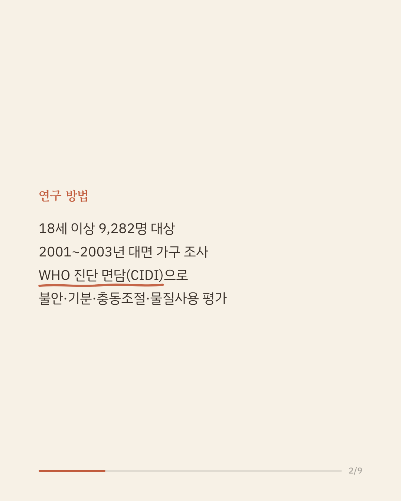
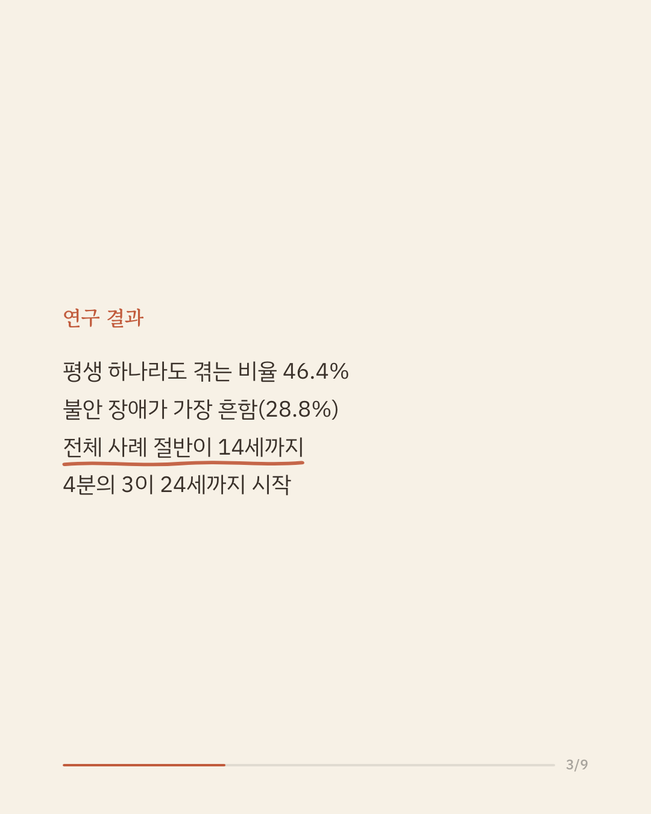
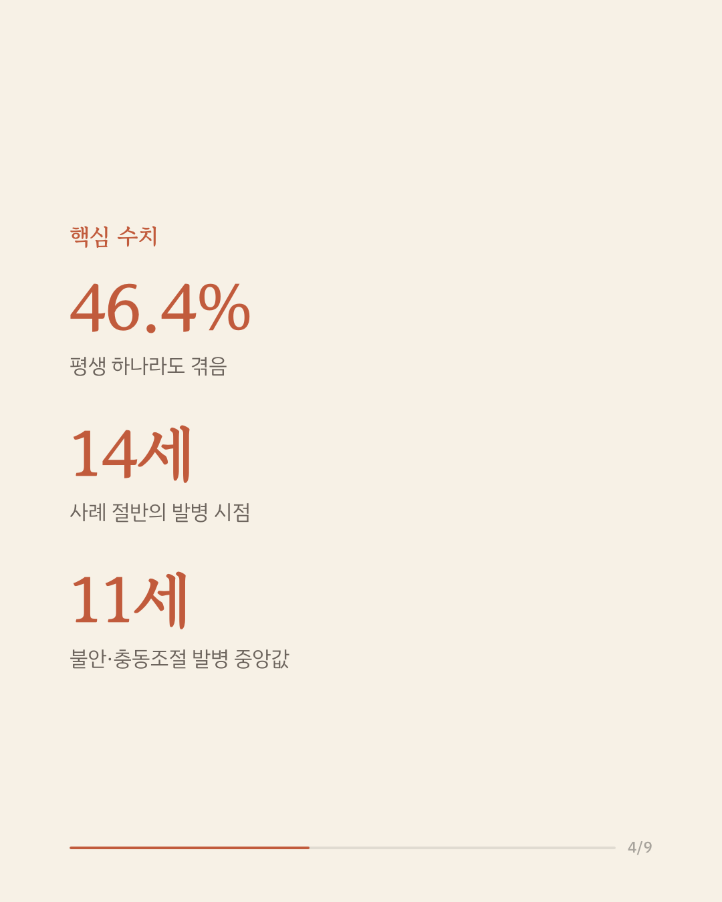
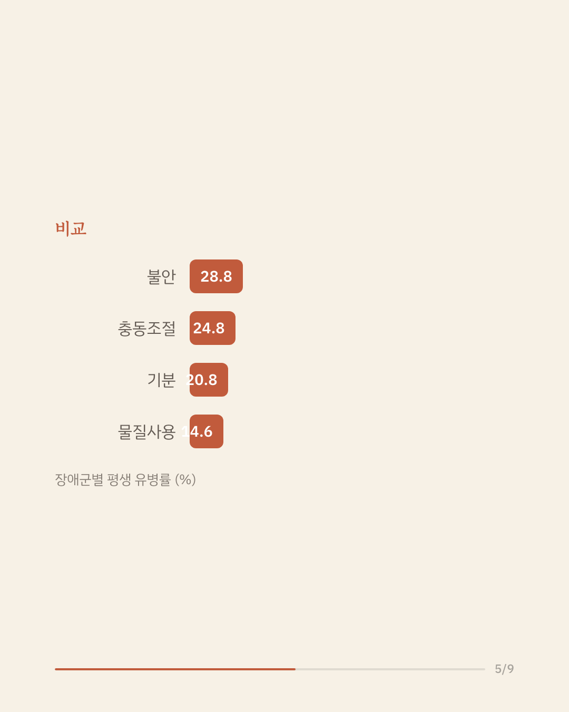
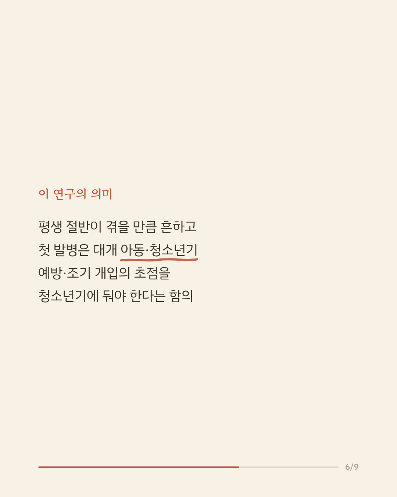
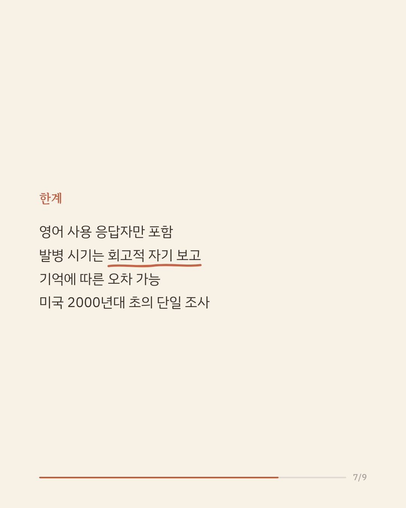
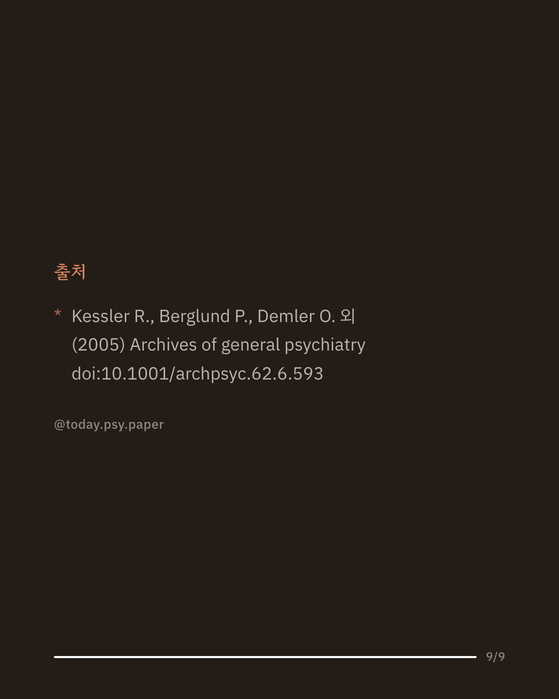

불안 장애나 우울증 같은 정신질환이 평생에 걸쳐 얼마나 흔한지, 또 대개 몇 살에 처음 시작되는지에 대한 전국 규모의 근거는 오랫동안 부족했습니다. 진단 기준(DSM-IV)에 따른 체계적인 추정치가 필요했습니다. 이 연구는 미국 전국을 대표하는 성인 9,282명을 2001년부터 2003년까지 대면으로 면담해 평생 유병률과 발병 연령 분포를 추정했습니다. 평생 동안 불안·기분·충동조절·물질사용 장애 중 하나라도 겪는 사람은 46.4%로 추정되었고, 그중 불안 장애가 28.8%로 가장 흔했습니다. 발병 시점을 보면 전체 사례의 절반이 14세까지, 4분의 3이 24세까지 시작되었으며, 불안·충동조절 장애는 발병 중앙연령이 11세로 특히 일렀습니다. 연구진은 정신질환의 첫 발병이 대개 아동·청소년기에 일어나므로 예방과 조기 개입의 초점을 청소년기에 둘 필요가 있다고 보았습니다. 다만 발병 시기는 응답자의 회고에 의존해 기억 오차가 있을 수 있고, 영어를 쓰는 미국 성인만을 2000년대 초에 조사한 자료입니다. 단일 연구이므로 확대 해석은 조심해야 합니다. 출처: Archives of General Psychiatry (2005), 'Lifetime prevalence and age-of-onset distributions of DSM-IV disorders in the National Comorbidity Survey Replication' #임상심리 #정신건강정보 #심리학연구 #정신질환유병률 #조기개입
python3 publish.py 15939837